Переключить тему
Школа - это путь к знаниям и открытиям. Мы сравниваем её с большим кораблем, который уходит в плавание каждый год с первого сентября и продолжает свое плавание в течение года. За тридцать два года школа совершила очень много таких путешествий. За этот жизненный путь произошло много разных перемен…
Школа - это самое замечательное время в жизни человека. Самые лучшие воспоминания в памяти человека - это воспоминания о школе. Меня зовут Екатерина. В этой школе я учусь с первого класса, сейчас я в 10 классе. За всё это время со мной случались разные ситуации, но я никогда не думаю плохо о школе, а наоборот, вспоминаю только самое хорошее и светлое.
Актуальность исследовательской работы заключается в первую очередь в том, что вместе с историей школы, мы пишем и историю своего города. Во-вторых, каждый ученик должен знать историю школы, в которой учится.
В настоящее время многие родители начали заботиться и говорить вслух, в какую школу пойдёт их ребёнок. Сейчас времена меняются, меняются люди и во многих школах происходят значительные изменения в лучшую сторону. Перед каждой семьёй встаёт задача в выборе школы. И на следующий год перед моими родственниками встанет такая же задача, и этот выбор остановится на школе № 21. Почему? Потому что я им расскажу о школе после того как сделаю свой проект.
К большому сожалению, я не знаю историю своей школы. На мой взгляд, каждый уважающий себя человек должен, да и не просто должен, а обязан знать историю школы, в которой учился или учится. Я помню что недавно в школе был большой праздник. Тогда школе исполнилось 30 лет. И я подумала… а что интересно было тогда, давно… И поставила перед собой цель: составить странички летописи школы, представляющие преемственность поколений, найти новые интересные факты истории школы. На примере архивных документов и фотоматериалов Совета ветеранов педагогического труда показать вклад школы в образовательную деятельность города.
Объектом исследования является школа: педагогический коллектив, учащиеся, родители.
Предмет исследования является вклад всех ее участников в формирование имиджа школы.
проанализировать деятельность МБОУ «СОШ №21» НМР РТ за период с 1986 по 2018 гг., изучить историю ее развития.
описательный – включает сбор, анализ и изложение материала; системный – позволяет рассмотреть вклад учителей, учащихся и родителей в создание истории школы; метод обобщений – позволяет на основе собранной информации сделать выводы; дедуктивный метод – позволяет использовать общие факты для получения точной информации о конкретной ситуации.
Эффективная работа учителей и учеников школы, оставила глубокий след в ее более чем 30- летний истории. показать результативность работы коллектива учителей и учеников.
Научная новизна исследования заключается в том, что впервые с позиции учащегося сделана попытка рассмотреть вклад в историю развития школы всех ее участников.
Практическая значимость состоит в том, что полученные материалы могут быть использованы на уроках обществознания и для проведения тематических классных часов.
Структура работы состоит из введения, одной главы, трех параграфов, заключения, списка литературы и приложения.
Школа - свет прожектора, который освещает нам жизненный путь, показывает направление, по которому нужно идти, чтобы развиваться, становиться лучше.
Школа - это открытая книга, кто-то читает её внимательно, кто-то не запоминает, что в ней написано. Сколько бы лет не было школе, она всегда юная, молодая. Мне кажется, что школа с грустью провожает каждый свой выпуск и с радостью встречает новый. Наша школа - это любимый дом, придя в который тебя встретят с любовью и лаской.
С развитием 20-го микрорайона в городе Нижнекамск назрела необходимость строительства культурного очага – образовательного учреждения. В соответствии с народнохозяйственным планом развития народного образования, по решению исполкома городского Совета народных депутатов города Нижнекамск №230 от 24.04.1986 года "Об открытии общеобразовательной средней школы №21" был заложен фундамент под строительство школы. 1 сентября 1986 года Образовательная средняя школа №21 по адресу: улица Мурадьяна 18А приняла 2242 ученика.
Руководителем школы был назначен молодой, талантливый учитель - Галявеев Нургазиз Нургалеевич.
выписка из приказа о назначении директором
В сентябре 1986 года состоялось первое комсомольское собрание учащихся-комсомолов и учителей-комсомольцев. На повестке дня стоял вопрос о создании комсомольской организации школы. Комсоргом школьной комсомольской организации была избрана от учителей – Шахмаева Зоя Леонидовна, комсоргом ученической комсомольской организации – Ермолаева Светлана.
В 2001 году И.Метшин издал Постановление №451а от 18 июня «О шефской помощи предприятий, организаций города образовательным учреждениям и активизации работы с населением по месту жительства». На протяжении многих лет завод «Окись-этилен» оказывают нам помощь в подготовке к учебному году, в организации различных мероприятий, выездов, экскурсий. Учащиеся чувствуют заботу и помощь со стороны шефов, выражают им свою признательность за сотрудничество в воспитании подрастающего поколения и активное участие в общественной жизни школы.
Постановление о шефской помощи
Через год, в 1987 году в школе обучалось 100 класс-комплектов, 2602 ученика, количество педагогических работников составляло 145 человек.
Опыт работы по руководству и организации учебно-воспитательного процесса был рассмотрен на Всероссийском семинаре директоров по управлению школой-гигантом.
В 1987 году в День рождения комсомола – 29 октября, состоялась торжественная линейка, посвященная рождению комсомольской организации учащихся школы №21.
В обкоме комсомола в г. Казани было вручено Комсомольское Знамя, которое до сих пор хранится в школе.
Комитет комсомола школы являлся лидером всех школьных мероприятий и акций. Важные события, мероприятия и праздники начинались торжественным внесением знамени комсомольской и пионерской организации. Яркими мероприятиями, которые остались в истории школы, стали: тимуровское движение; доставление газеты «Ленинская правда» подписчикам 20 микрорайона.
Комсомольский отряд из учителей-комсомольцев и учащихся дважды совершал поездки в «Долину смерти», под руководством секретаря комсомольской учительской организации Латыповой Лилии Захрамовны и Ковшова Владимира Петровича. По материалам был оформлен школьный уголок «Славы».
В городской комсомольский штаб был избран Миронов Алексей, который избрав после окончания школы профессию военного геройски погиб в Чеченских военных событиях.
Комсомольская организация школы шефствовала над Нижне Чеченским детским домом. Комитет комсомола школы ярко проявил себя в работе КИДа – клуб интернациональной дружбы имени Саманты Смит. КИД стал победителем среди КИДов города и Республики. Принимал участие во Всесоюзном слете отрядов КИД в г. Шамурша. Руководитель КИДа – Кудрявцева Галина Александровна – член комитета комсомола школьной учительской организации, учитель английского языка, которая по сей день верна своей профессии и занимается обучением и воспитанием обучающихся.
С 1988 по 1990 годы школа являлась призерами в городском смотре художественной самодеятельности, основными участниками которого были школьники и учителя комсомольцы: комсомольский хор, драматический кружок Старшеклассников был признан лучшим.
Лучшая команда туристов была создана из числа учащихся-комсомольцев и учителей. В 1989-1990 годы туристическая команда занимала призовые места в городском туристическом слете. Руководитель - Латыпова Л.З.
Особо отличались комсомольская организация школы в трудовых делах. По итогам 5 летней трудовой четверти и организации Трудового объединения школьников (ТОШ). В 1989-1995 годы ТОШ занимал призовые места в городе.
90 годы XX века… Перестройка. Изменение. Новые надежды, планы… Упразднение комсомольской и пионерской организации. Утраты традиции и торжества. В нашей школе прошло это время без бурь и митингов. Комсомольская организация, как была Старшеклассниками, так и продолжила свою деятельность и стала именоваться Советом Старшеклассников – первая в городе, но потом эту идею подхватили и другие и забыли откуда она берет начало. А мы продолжили систему и идею у городского комсомольского штаба «Юность» и славные традиции комсомола отражаются в школьном музее.
В 1998 году школа получила лицензию на образовательную деятельность с детьми с нарушениями психофизического развития, это специализированные классы V и VII видов. Опыт работы школы показал, что ежегодно происходит увеличение классов V и VII видов. На основании этого было принято решение об организации Базовой площадкой школу №21 по Инклюзивному обучению в 2015 году и открытие нового класса с обучением по программе 7/2. Открытие такого класса вызвано тем, что каждый ребенок и каждая семья имеет право обучать детей со слабым здоровьем по месту жительства. Сегодня в стране ставится вопрос так, что даже дети инвалиды должны обучаться в общеобразовательной школе наравне с другими детьми. Я считаю, что каждый ребенок должен стать полноправным членом общества и получить «шанс» на образование. Нельзя детей отделять от среды, в которой будет жить. Школа второй год подряд открывает класс с программой обучения 7/2.
С 15 сентября 2006 года (Постановлением исполнительного комитета Нижнекамского муниципального района Республики Татарстан №253 от 15.09.2006 г.) в школе был введен эксперимент по осуществлению образовательного процесса в режиме «Школа полного дня». Основной целью данного эксперимента было объединение учебной и внеучебной сферы деятельности учащихся в условиях учебно-познавательного сообщества, формирование образовательного пространства школы, объединенного в единый функциональный комплекс образовательных и оздоровительных процессов. Экспериментальная площадка работала 3 года (в связи с отсутствием финансирования деятельность ШПД была перепрофилирована).
В 2010 году Школа удостоена квалификационной характеристики «Школа, содействующая здоровью, серебряного уровня». Каждый учебный день начинается с пятиминутки и выполнения комплекса упражнений «Республиканской зарядки».
За время своей деятельности Галявеев Нургазиз Нургалеевич сумел создать успешный, дружный коллектив. Педагоги школы ежегодно принимают участия в профессиональных конкурсах и заслуженно получают награды: 2012 год – учитель информатики Рыцова Гульсирень Камиловна стала победителем Гранта «Лучший педагог в области ИКТ»; 2012 год – учитель начальных классов Вахитова Альбина Вильевна получила Диплом за победу в номинации "Формула успеха" в муниципальном конкурсе "Учитель года", 2012 год; 2013 год – учитель обществознания Мингазова Елена Викторовна награждена Диплом Лауреата в муниципальном конкурсе "Учитель года-2013"; 2015 год - учитель татарского языка и литературы Хасаншина Зайнап Закиевна была удостоена Гранта «Лучший учитель»; 2017 год – классный руководитель Юнусов Марсель Рамилевич стал Лауреатом III степени к конкурсе «Классный руководитель - 2017»; 2017 год – заместитель директора по учебной работе награждена Грамотой за I место в конкурсе «Завуч года».
Нургазиз Нургалеевич осуществляя эффективное руководство, добился значительных успехов в профессиональной, общественной деятельности. Он занимал должность Председателя Совета директоров, заслужил высокого общественного признания добросовестным отношением к своей трудовой деятельности. Пользовался авторитетом и уважением среди руководителей образовательных учреждений, храня в душе неисчерпаемые запасы доброты, и умел видеть мир светлыми глазами. Это Человек – «Золотое Сердце», чье сердце не знает меры и границ, работал и жил для добрых дел, отдавал себя всего без остатка, ничего не прося взамен, потому что он иначе не мог, и не умел. На протяжении 27 лет являлся директором школы №21. Галявеев Нургазиз Нургалеевич добился выдающихся результатов в области культуры и просвещения. Был отмечен многочисленными наградами:
В 2013 году на короткий срок пришел новый директор – Махмутов Айзат Гамирович. Тогда я училась в 5 классе. Руководителем он пробыл четыре года. Я хорошо знакома с Айзат Гамировичем, так как он преподавал нам урок географии. Могу уверенно сказать, что этот человек отлично знает свой предмет и преподает его увлечённо и творчески. Он всегда повышает свой профессиональный уровень. Айзат Гамирович за время своей работы руководителем школы реализовал муниципальную программу «Безбарьерная школа». Был награжден Благодарственным письмом главы Нижнекамского муниципального района, 2015 году.
Махмутов Айзат Гамирович, 2013 год.
В 2016 году наша школа отметила свой 30 — летний юбилей. За эти годы в школе сложился стабильный педагогический коллектив, отсутствует текучесть кадров, 88 % педагогов открывали школу и работают по сей день.
30 - летие школы №21, 2016 год.
В 2017 году руководство школой принял Сираев Ильнар Рафаилович. Своим новым взглядом на школу он много труда вложил в ее оснащение. И заслуженно получил Грант в конкурсе «Эко - школа». Награжден Грамотой за 1 место в подготовке школы к учебному году.
Сираев Ильнар Рафаилович, 2017 год.
За время обучения и воспитания школа сделала 31 выпуск обучающихся во взрослую жизнь.
Первый выпуск школы, 1987 год.
Среди выпускников - 32 медалиста. За период введения ЕГЭ все учащиеся успешно сдают государственную аттестацию по обязательным предметам и предметам по выбору.
Великий русский критик Н.А. Добролюбов говорил, что искусство педагога состоит в том, чтобы с высот своей образованности и жизненной мудрости, опираясь на выводы психологии и педагогики, творчески используя их в своей повседневной работе, проникать в самые далёкие галактики детского мира, глубоко и чутко понимать этот мир, побуждать, а не понуждать своих питомцев на овладение знаниями, на добрые дела и поступки. Именно такими были и являются учителя нашей школы. Школа и ее ученики гордятся своими ветеранами, мастерами своего дела.
Великий русский критик Н.А. Добролюбов говорил, что искусство педагога состоит в том, чтобы с высот своей образованности и жизненной мудрости, опираясь на выводы психологии и педагогики, творчески используя их в своей повседневной работе, проникать в самые далёкие галактики детского мира, глубоко и чутко понимать этот мир, побуждать, а не понуждать своих питомцев на овладение знаниями, на добрые дела и поступки. Именно такими были и являются учителя нашей школы. Школа и ее ученики гордятся своими ветеранами, мастерами своего дела.
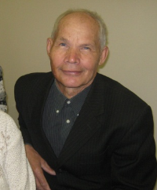
Федотов Эрнест Кузьмич, учитель технологии, стаж работы – 48 лет.
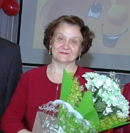
Шоетова Любовь Петровна, заместитель директора по учебной работе. Награждена нагрудным знаком «Почетный работник общего образования РФ». Стаж работы – 35 лет.
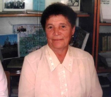
Валиева Завзия Шагизяновна, учитель химии, стаж работы – 36 лет.
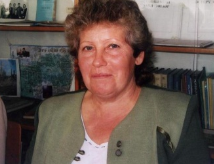
Смирнова Валентина Николаевна, учитель технологии, стаж работы – 36 лет.
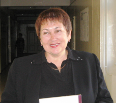
Новикова Лидия Васильевна, учитель русского языка и литературы, стаж работы – 29 лет.
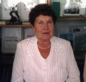
Митряшкина Надежда Михайловна, учитель математики, стаж работы - 34 года.
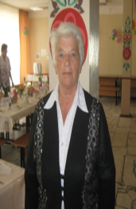
Колпакова Галина Федоровна, учитель русского языка и литературы, стаж работы – 49 лет.
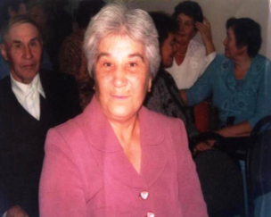
Мирсаитова Ильсияр Гарифовна, учитель математики, стаж работы – 42 года. Награждена нагрудным знаком «Почетный работник общего образования РФ».
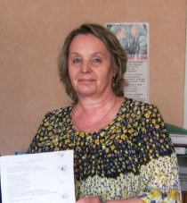
Морозова Любовь Ивановна, заместитель директора по воспитательной работе, стаж работы - 45 лет. Награждена Значком «Отличник народного просвещения», Нагрудным знаком «Почетный работник общего образования РФ».
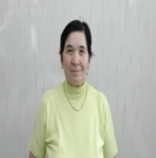
Туйкина Асия Миассаровна, учитель математики, стаж работы – 46 лет. Награждена нагрудным знаком «За заслуги в образовании».
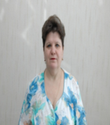
Никонорова Марина Владимировна, учитель начальных классов, стаж работы - 35 лет. Награждена нагрудным знаком «За заслуги в образовании».
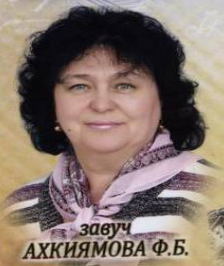
Ахкиямова Фяридя Биляловна, заместитель директора по учебной работе, стаж работы – 36 лет. Награждена нагрудным знаком «Почетный работник общего образования РФ».
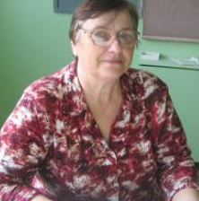
Павлова Тамара Васильевна, учитель математики, стаж работы – 45 лет. Награждена нагрудным знаком «Почетный работник общего образования РФ».
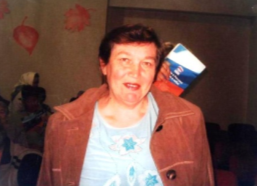
Крылова Людмила Александровна, учитель иностранного языка, стаж работы – 37 лет.
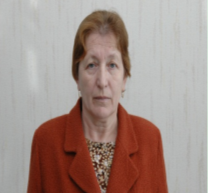
Шишмагаева Нина Николаевна, учитель начальных классов, стаж работы – 42 года. Награждена нагрудным знаком «За заслуги в образовании».
В данный момент, на 1 сентября 2018 года, в школе обучается 536 учащихся, 25 класс-комплектов, 20 общеобразовательных классов ‒ 479 учащихся, 5 коррекционных классов ‒ 57 ученик. В коллективе работает 39 педагогических работников и 5 внешних совместителя.
По изучению и анализу переписи микрорайона школа имеет тенденцию к росту численности учащихся
Настройте вопросы под себя: